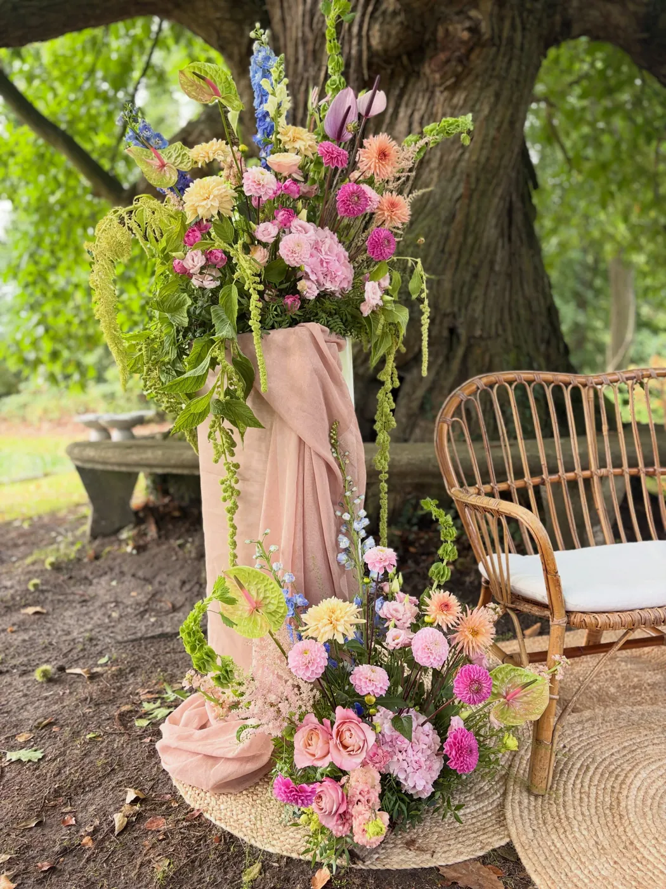
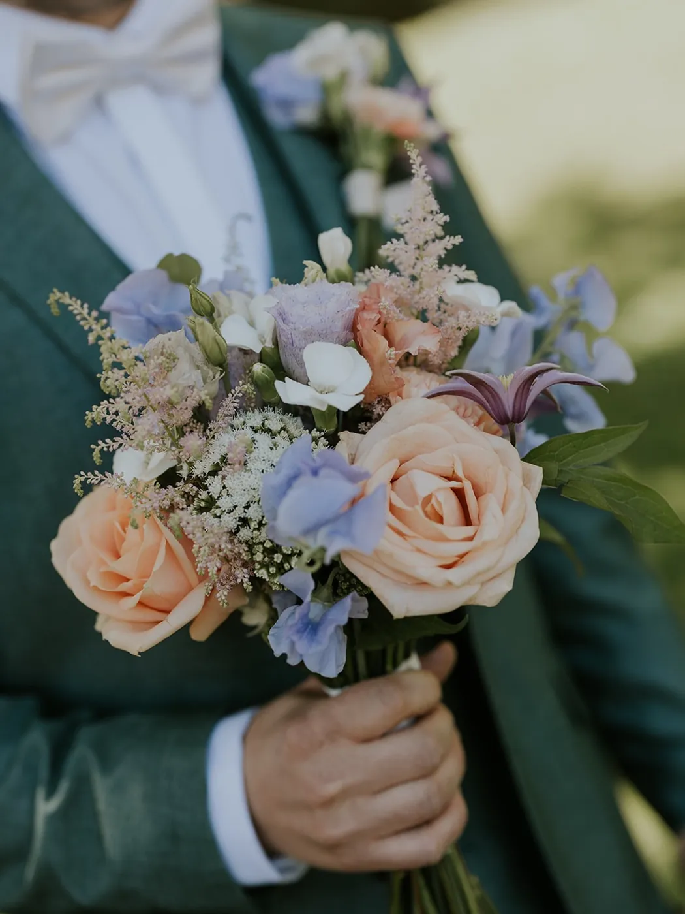
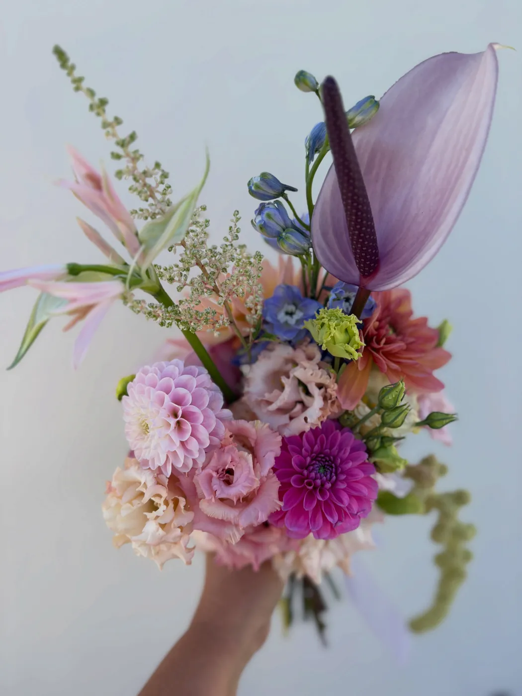
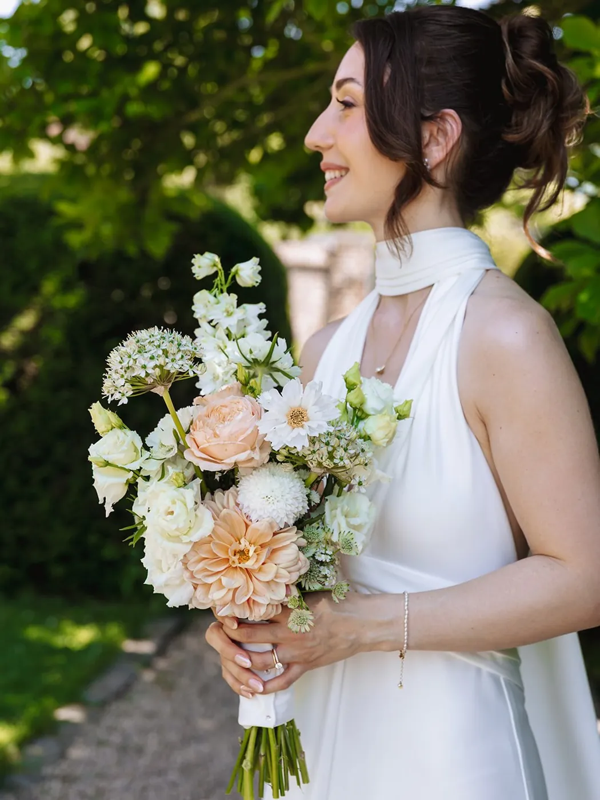
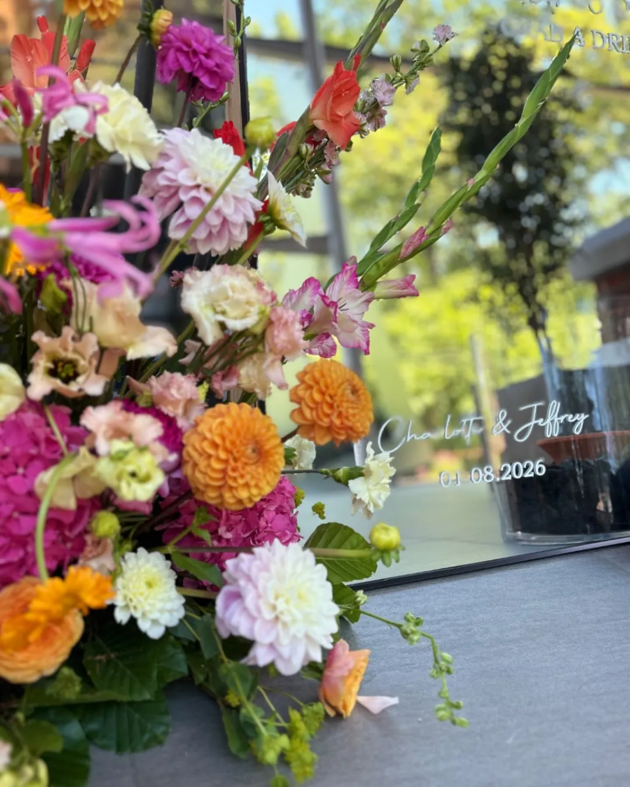
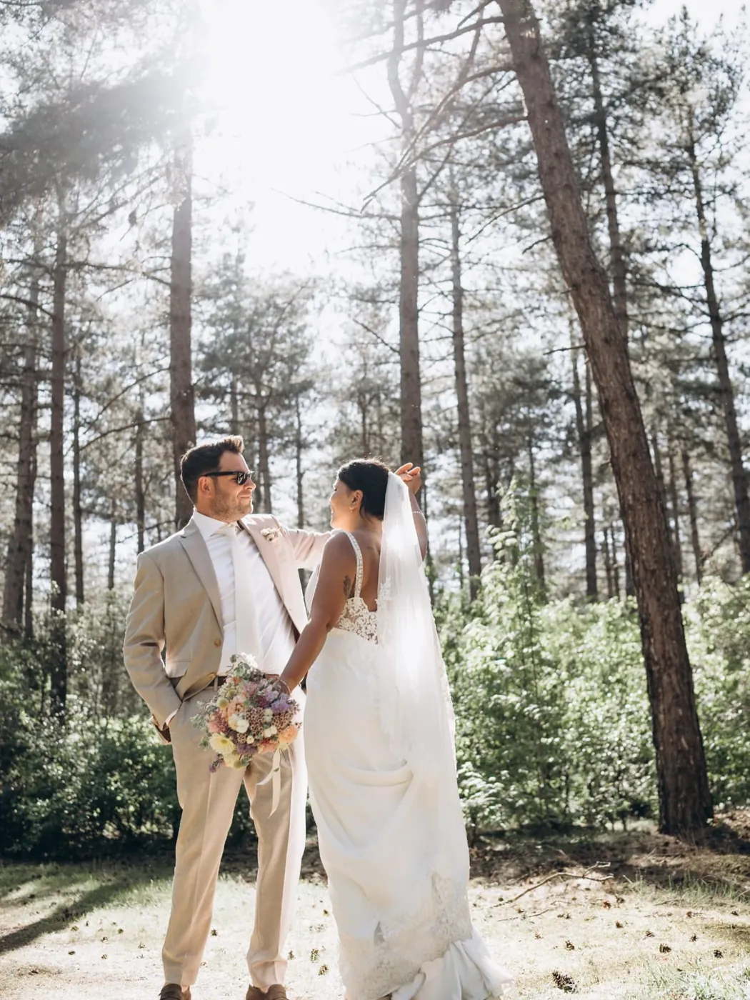
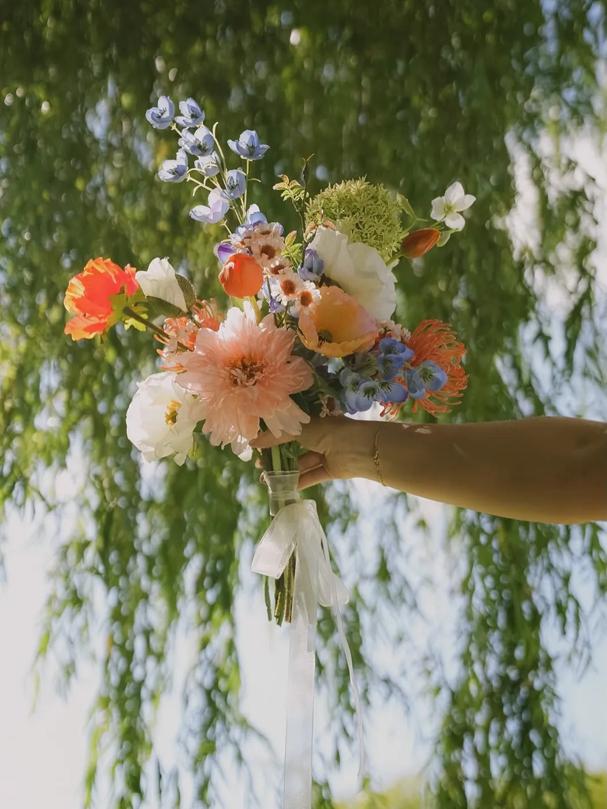
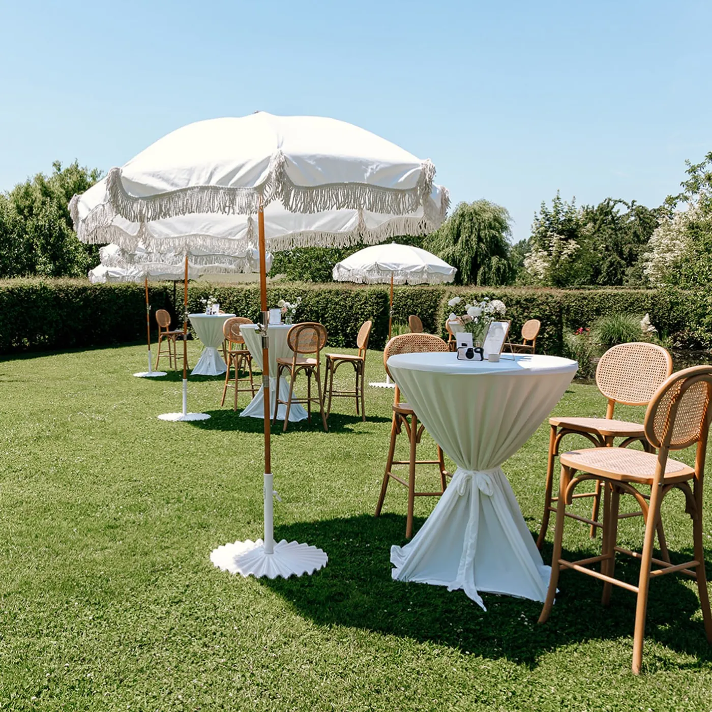
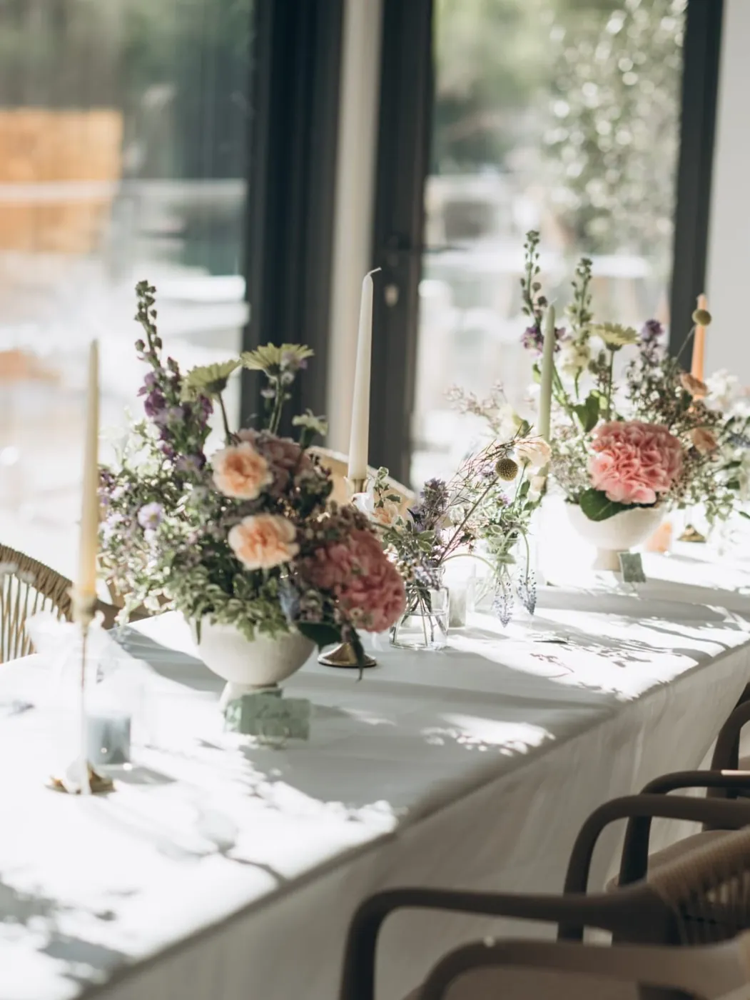

WeddingsHuwelijken
Bruidsboeket, corsages, ceremonie en tafelbloemen. Ula denkt mee vanaf het eerste gesprek tot de opbouw op jullie dag.
- Bruidsboeket
- Ceremonie
- Tafels
Atelier Ulalie is de bloemenstudio van Ula in Genk. Bruidsboeketten, ceremonie en tafels, voor trouwfeesten in België en in het buitenland. Luchtig geschikt, met een vleugje durf.





Zacht en romantisch of net vol kleur. Elke trouw krijgt een eigen palet, afgestemd op jullie locatie en wat jullie mooi vinden.

WeddingsBruidsboeket, corsages, ceremonie en tafelbloemen. Ula denkt mee vanaf het eerste gesprek tot de opbouw op jullie dag.

Forever bloomEen boeket dat niet verwelkt. Handig als je trouwt in het buitenland, of als je je bloemen gewoon wil houden.

Events & workshopsBloemen voor een feest of bedrijfsevent, en workshops waarin je zelf een boeket maakt. Verse boeketten kan je ook gewoon bestellen.

Je hoeft nog niet te weten wat je wil. Breng een paar beelden mee die je mooi vindt, dan zoeken we samen naar de bloemen die bij jullie passen.
“Tijdens het kennismakingsgesprek hadden we meteen een heel goed gevoel bij Ula. Ze begreep onze wensen perfect en gaf ons vanaf het eerste moment het vertrouwen dat alles helemaal in orde zou komen.”
“Ik kwam bij Atelier Ulalie terecht voor het maken van een bruidsboeket, zowel voor mijn wettelijke trouw als voor ceremonie in het buitenland. Ula kwam met het idee om voor zijdebloemen te gaan.”
“Wij zijn ontzettend blij met de bloemen voor onze trouwdag. Alles was tot in de puntjes verzorgd en het kleurpalet klopte volledig met wat we voor ogen hadden.”
Stuur een berichtje met jullie datum en locatie, of een paar foto's die je mooi vindt. Ula plant graag een kennismaking in om alles rustig te overlopen.
Ik maakte deze demo voor jullie om te tonen wat er kan. Na een kort gesprek maak ik er iets veel persoonlijkers van, helemaal naar jullie wens.
Vrijblijvend. Ik kom langs of we bellen.
Op maat, op jullie eigen domein.
Geen voorschot. Jullie betalen pas als alles klaar is.
Hosting, domeinnaam en kleine wijzigingen, zoals nieuwe openingsuren.
Omdat een voorbeeld meer zegt dan een mail. Zo zien jullie meteen wat er kan, en het kost jullie niets.
Nee. Het gesprek is vrijblijvend. Vinden jullie het niks, dan is het daarmee gedaan.
Na ons gesprek staat jullie site binnen 10 tot 14 dagen online.
Zeker. Jullie domeinnaam kan gewoon blijven, de nieuwe site komt in de plaats van de oude.
Nee, dat doe ik op basis van ons gesprek. Eigen foto's zijn mooi meegenomen, maar niet nodig om te starten.